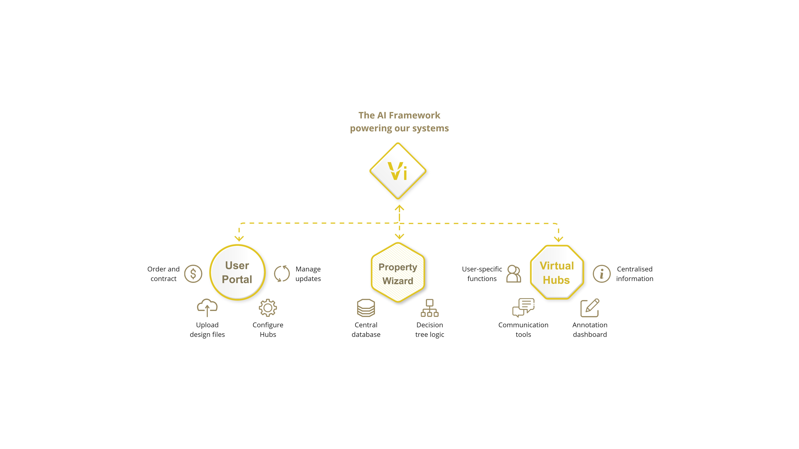

The gold-circle icon family. Each glyph sits inside a thin gold ring at a uniform size. Used for entity badges in architecture diagrams, marketing collateral, and any time an icon needs to "count" as a system component. The desaturation row (top) is the canonical state-strength gradient.
